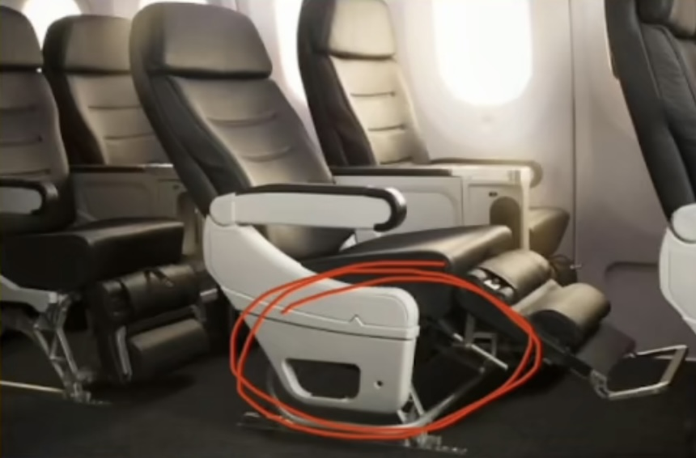
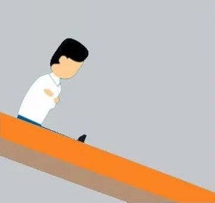

当飞机事故发生时，请各位乘客保持镇静，系好安全带，
一定要听从空乘人员的指挥，不要大喊大叫，确保以最快的速度安全撤离。
1. 发生紧急情况时，快速回到座位上并系紧安全带
发生紧急情况时，如果不在自己座位上，走在客舱里或在洗手间，来不及回到自己座位上：

2. 客舱失压时用力拉下氧气面罩
客舱内旅客座位的上方都设置有氧气面罩，现代大多数的飞机是在不适合人类生存的高度进行飞行的，没有足够的氧气供人呼吸，所以客舱内必须增压。如果客舱突然失压或遇到其他缺氧情况，氧气面罩会自动脱落，佩戴前旅客需要用力拉下氧气面罩，这样供氧装置才会启动。
3. 迫降时系紧安全带并采取防冲击姿势
在发生坠机前，按照乘务员的指示采取防冲击姿势：小腿尽量向后收，超过膝盖垂线以内；两只胳膊交叉，抓住前方座椅靠背；头部向前倾，埋进胳膊，尽量贴近膝盖。并在飞机着陆之前一直保持这个姿势。
防冲击姿势是乘客要学会的一个重要方法，它可以减少冲撞风险。此外，当飞机坠落时，腰间紧系的安全带能抵挡很大一部分冲击力，所以乘机时要系紧安全带，而不只是系上。
4. 熟练掌握解开安全带的方法
如果机组已经发生了迫降预警，首先要做的是，确认安全带是否扣好系紧。等到飞机着陆或者停稳后，顺利地解开安全带也颇为关键。澳大利亚教授盖里尔曾研究了超过100次坠机事件及2000多名幸存者的受访记录，总结出了遭遇坠机事故时的自救方法。盖里尔的研究显示，在发生紧急事件时，甚至机组人员也会在这一问题上出错。“当你要解开安全带时，会下意识地想到解开汽车上安全带的方法，你会去按按钮，但在飞机上，你需要打开插销。如果你不能解开安全带，逃生的机会就很渺茫了。”
5. 保持冷静赶快逃离残骸
一般飞机在降落时头稍低，这时机头最容易遭到撞击，机尾则完好无损，这种状况下，坐在机尾的座位是最安全的。只要所坐位置没有发生撞击和爆炸，乘客在保持头脑冷静的情况下，尽快远离残骸。
6. 舱内着火要爬向“上风口”
当飞机坠落时，机舱内充满刺激性烟雾时，应带好氧气面罩，用湿手巾捂住口鼻，以免吸入有毒烟雾，立即以爬行姿势向“上风口”移动，这样的位置一般是出口，而且要尽量在200秒内逃出机舱。
7. 采取正确的跳滑梯姿势
此外，飞机落地后，还要采取正确的姿势从滑梯撤离，应双臂平举，轻握拳头，或双手交叉抱臂，从舱内跳出落在梯内时手臂的位置不变，双腿及后脚跟紧贴梯面，收腹弯腰直到滑到梯底。
8. 成功逃离的失事的飞机后，要迎风快速逃离现场
飞机发生意外时，往往伴随浓烟失火甚至爆炸。浓烟和火焰会随着风势蔓延。因此，顺风跑动的幸存者可能会受到二次伤害。逃离飞机后，旅客应该判断当时的风势，尽可能地远离飞机，确保最大的安全。